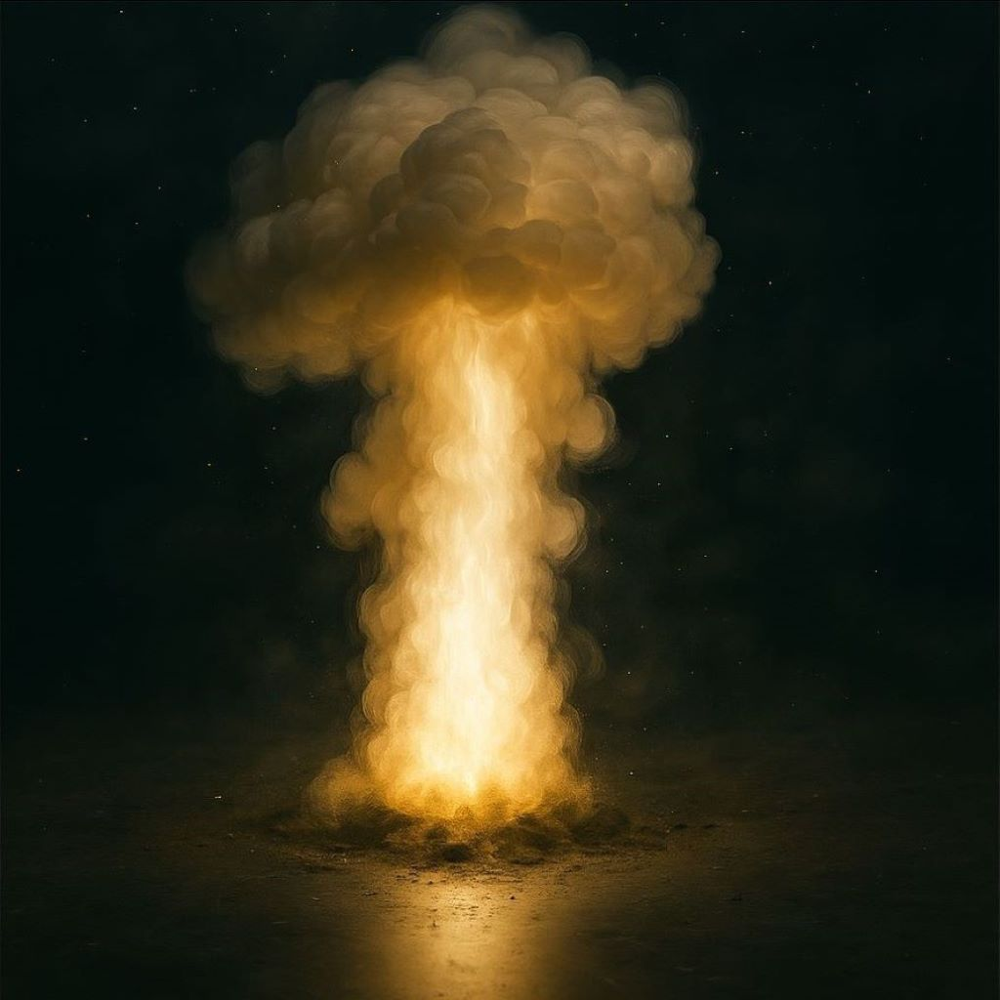
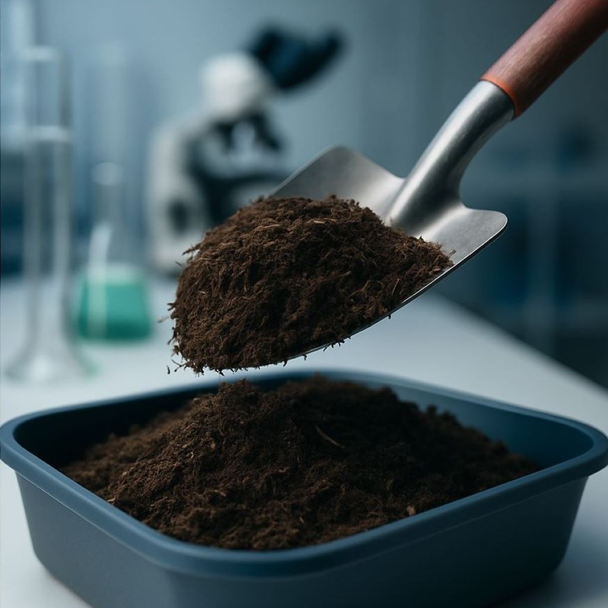
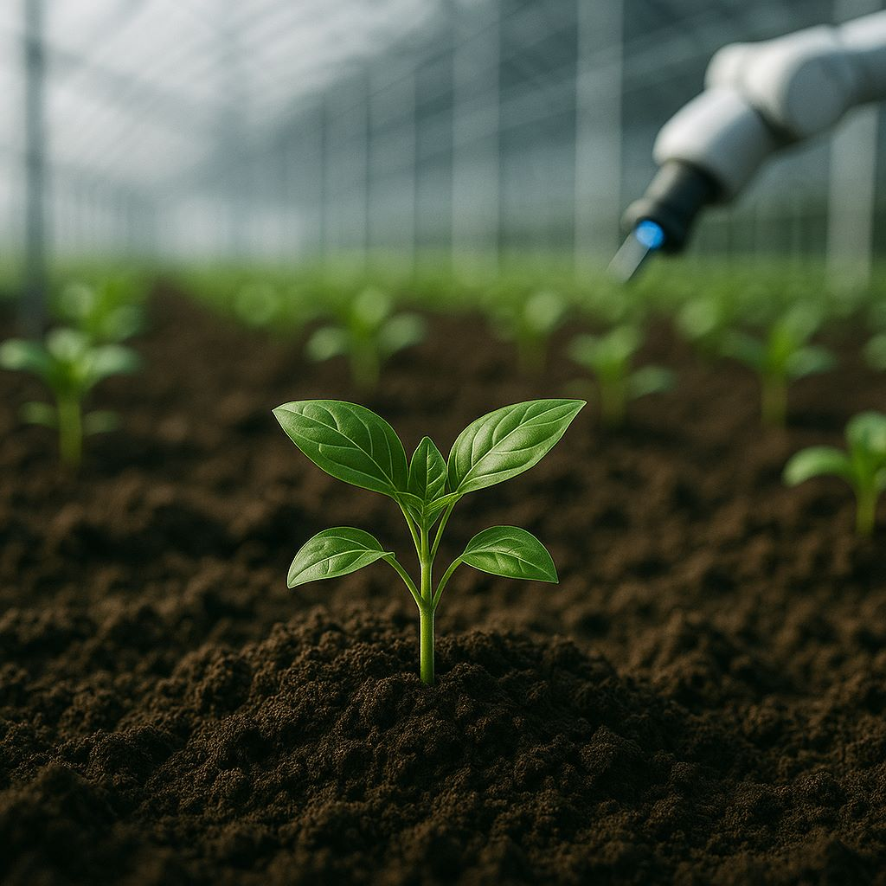
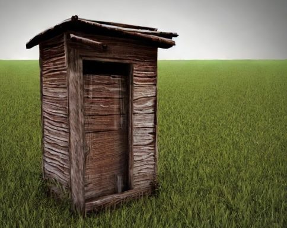

7.NITROGENO
Historia del Nitrógeno
El gas discreto que cambió el mundo...
del “aire muerto” al motor de la agricultura
El nitrógeno fue identificado en 1772 por Daniel Rutherford, quien lo llamó “aire nocivo” porque no permitía respirar ni quemar cosas. Otros científicos como Scheele, Cavendish y Priestley también lo estudiaban por esos años, intrigados por ese gas que parecía no hacer nada.
Más adelante, Lavoisier lo bautizó como “azote” (sin vida), por su naturaleza inerte. Pero en 1790, el químico Jean-Antoine Chaptal le dio el nombre actual: nitrógeno, en referencia a los nitratos usados para fabricar ácido nítrico.
Lo que nadie imaginaba en ese entonces era lo que vendría después: explosivos más potentes, fertilizantes que revolucionarían la agricultura… y un gas invisible que terminaría alimentando al mundo (¡y también causando más de un problema ambiental!).
Daniel Rutherford
¿Qué tienen en común los explosivos, el estiércol y la agricultura moderna?
Todos están relacionados con el nitrógeno.
-

Explosivos
Muchos explosivos, como la dinamita o el TNT, contienen compuestos con nitrógeno. Al romperse, liberan gases y energía de forma violenta, produciendo la explosión.
-

Estiércol
El estiércol es una fuente natural de nitrógeno para la tierra. Cuando se descompone, libera nutrientes que las plantas pueden absorber, ayudando al crecimiento agrícola.
-

Agricultura
Las plantas necesitan nitrógeno para crecer, pero no pueden usar el nitrógeno del aire. Gracias al proceso Haber-Bosch, hoy se fabrican fertilizantes que alimentan al mundo.
La historia del nitrógeno no empieza en laboratorios, sino en lugares como:
-

Letrinas
Las letrinas son sistemas antiguos de eliminación de desechos humanos, que permiten mantener la higiene y evitar la contaminación en las zonas habitadas.
-

Corrales
El corral es un espacio cerrado donde se mantienen animales domésticos, facilitando su cuidado y protegiéndolos de depredadores o pérdidas.
-

Cuevas de Murciélagos
Las cuevas de murciélagos son fuentes naturales de nitrógeno debido a la acumulación de guano, que enriquece el suelo y sirve como fertilizante.
Allí se formaba salitre, rico en compuestos nitrogenados, usado durante siglos para fabricar pólvora.
Pero el verdadero desafío era aprovechar el nitrógeno del aire.
Aunque nos rodea, está en forma deN₂, una molécula muy estable.
La revolución: el proceso Haber-Bosch
En el siglo XX, el químico alemán Fritz Haber y el ingeniero Carl Bosch desarrollaron un método para sintetizar fertilizantes a partir del aire.
Daniel Rutherford
N₂ + 3 H₂ → 2 NH₃
(Reacción del proceso Haber-Bosch)
Carl Bosch
Reacción de síntesis del amoníaco (NH₃)
- Se obtiene NH₃ a partir de N₂ y H₂
- Usa altas temperaturas (400–500 °C)
- Presión superior a 200 atm
- Requiere un catalizador de hierro
Repercusión mundial
Gracias a este proceso, se pudo producir fertilizante a gran escala, aumentando la producción de alimentos.
- 🌍 Más del 50% de la población mundial depende de este proceso.
- 🧍 Alrededor del 50% del nitrógeno en tu cuerpo proviene de este proceso.
- 💨 En otras palabras, ¡estás hecho de aire transformado en una fábrica!